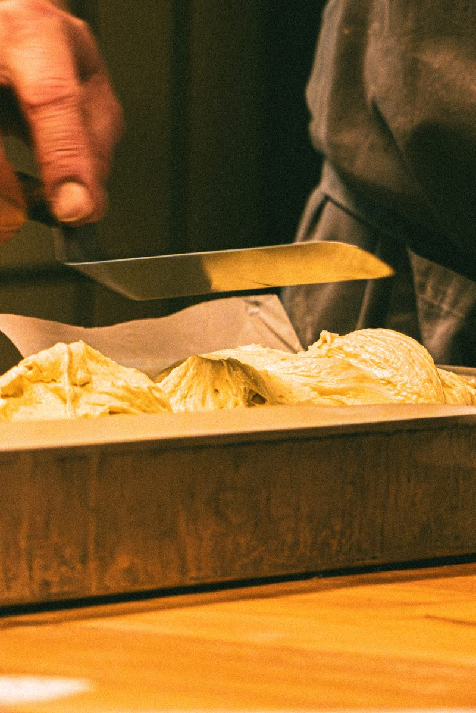
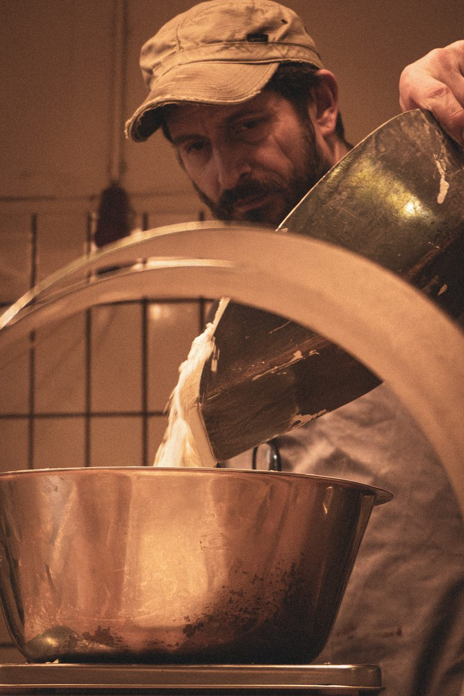
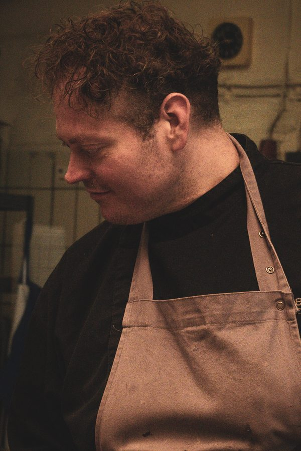

Düsseldorf Old Town
Düsseldorf patisserie.Since 1846.
Baked for cafés, restaurants and catering — and on Saturdays for anyone who stops by.

Buschmann 1846 is a bakery kitchen in Düsseldorf’s Old Town.
Cakes, tarts and patisserie are made here — for cafés and restaurants, for companies and for private celebrations.
History
It all began in Akademiestraße in 1846.
August Buschmann opened his bakery here — the same rooms where the baking happens again today. Six generations carried the business through two world wars, at times with around 120 staff and five locations across Düsseldorf.
Gregor August Buschmann, a direct descendant of the founder, grew up in the Old Town and, as a pupil at the Maxschule, often picked up a pastry from the bakery on his way home. After years as a chef, head chef, sous-chef and pâtissier in Düsseldorf and Switzerland, he has been back since January 2021, working where it all started in 1846.

Six generations.
- 1846
August Buschmann founds the bakery in Akademiestraße.
- 1950
The café in Flinger Straße reopens after the war.
- 1970s
At times, around 120 people work for Buschmann.
- 1980s
By the middle of the decade, the company runs five locations in Düsseldorf.
- 2021
Gregor Buschmann takes up the work in the historic bakery again.
- Today
The baking happens in Akademiestraße again — for Düsseldorf cafés, for restaurants and for guests.

Patisserie
Cakes, tarts, patisserie.
What a bakery with more than a hundred and seventy years of practice makes: lemon cheesecake with lemon glaze, tarts with cherry filling, cream whipped in a copper bowl. It is served on old porcelain — some of it has been in the house longer than most of the recipes.
“Eat more cream cake!”Gregor Buschmann, in his portrait for THE DORF
The bakery
Mixed, poured, spread, baked.
Machines that have done their work for decades, and the steps nobody hands to a machine. Plenty of it could be quicker — but not better.



Tyll Schulte trained as both a chef and a pastry chef. Together with Gregor Buschmann, he gets the cakes, tarts and patisserie ready to go.
Pictures
A week in Akademiestraße.


Catering
For cafés, companies and private occasions.

Cafés and restaurants
Cakes, tarts and patisserie for businesses that cannot or would rather not bake everything themselves — baked and delivered during the week.
Companies
For meetings, receptions and celebrations. Orders are arranged in advance and delivered on time.
Private occasions
For birthdays and celebrations — arranged in advance and suited to the occasion.
Delivered across Düsseldorf To the location
On Saturdays, the window opens.
Coffee and cake are served from 12 noon to 5 pm. Tables and chairs are set out in front. The bakery itself stays exactly what it is: a bakery.
Saturday · 12 noon–5 pm Akademiestrasse 8, Old Town


Claudia Fourmont keeps an eye on orders and organisation and takes the finished cakes where they need to go. On Saturdays, she is often one of the familiar faces serving guests.
Location
Akademiestraße 8.
In the middle of Düsseldorf’s Old Town — the same address as in 1846.
Address
Buschmann 1846Akademiestraße 8
40213 Düsseldorf
For guests
Saturdays 12 noon–5 pmCoffee and cake.
Follow